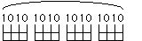
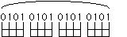

Trills
Trills are just taking each of the legato combinations and repeatedly alternating the hammer on and the pull off:

or
Here the first finger note is sounded and then the finger pulls off, then then hammers-on, then pulls-off...etc. Vica-versa in the second example. The notes are grouped to be groped as four beats in a standard 4/4 measure. This can be repeated until the fingers tire. Rest the hand before going on the next combination:
01
02
03
04
12
13
14
23
24
34